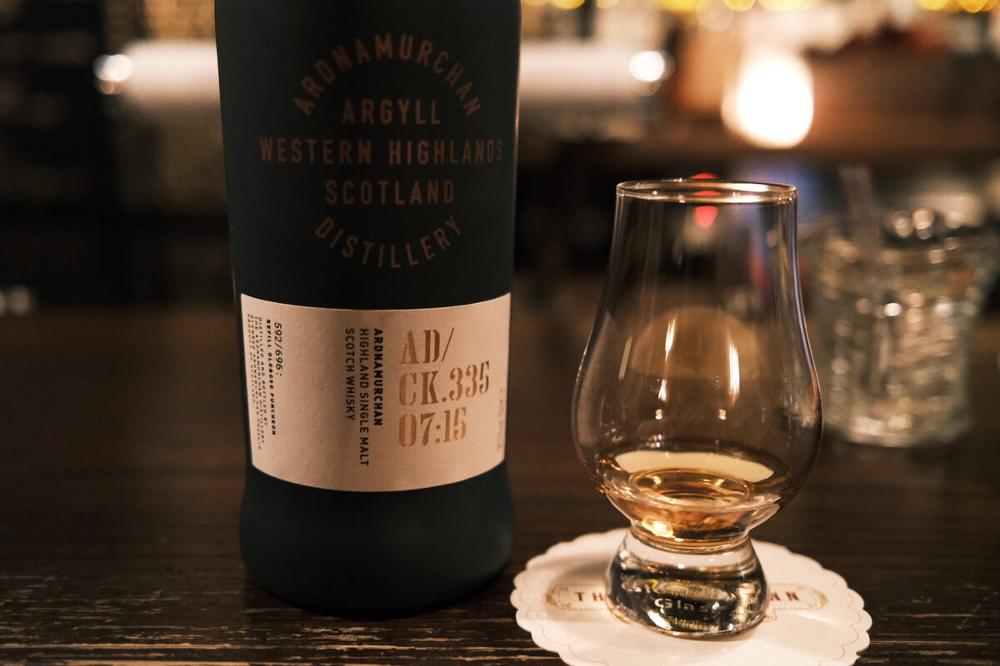

Ardnamurchan "AD/CK.335 07:15" 2015 58.5% (refill oloroso puncheon)
One of those hype distilleries. Single cask, probably sold out within minutes and flipped for ten times the price. It’s good though. If I understand the cryptic code correctly, it’s from cask 335, distilled July 2015. And bottled 2020.
Colour Deep gold.
Nose Dried fruits, a little rubbery. Reminds me of a Springbank. Ripe rockmelon, a sprig of mint. Brown sugar and vanilla. Cereal malt. With water, orchard fruits and caramel.
Palate Spicy, earthy and dirty. Dried fruits and dark chocolate. A lot of spice! Gluhwein, cinnamon and cloves. Rubbery funk. Creamy malt. Nice and hot. With water, silky texture. Coffee and more chocolate. Enjoying this peat. Smoke is more present now. Malty again.
Finish Really chocolatey… dark chocolate, add raisins. Earth. More dried fruits and cream. Christmas cake. Long and very warming. Rum and raisin. Smoke. With water, smoke billows with raisins. Boiled lollies and fruit juice.
Comments Terrific balance with the peat and cask here. Earthy, chocolatey, Christmassy. 89/100.

Posted by Dominic on 15 Jun 2021